Executive summary
LendX Finance is a fictional multi-segment lender offering Personal, Home, Auto, Business and BNPL loans through 20 branches across India. I investigated its ₹7.11bn loan book end to end in PostgreSQL, then built a 7-page Power BI dashboard on top of it.
The analysis found that the portfolio is technically profitable per loan but loss-making overall: unit economics look healthy (₹96.67K revenue per loan), yet credit losses on a subprime, over-leveraged customer base wipe out interest income. The clearest lever is BNPL, which carries more than twice the book's average default rate.
Business problem
Business question: Where does risk actually sit in this loan book, and is the business earning enough to cover it?
| Question investigated | Why it matters |
|---|---|
| Which loan types and credit bands default most? | Directly erodes profitability and should drive underwriting rules |
| Is repayment delay predictable before a customer defaults? | An early-warning signal could change collections timing |
| Which regions and branches combine volume with controlled risk? | Guides where to expand lending |
| Is there an under-used, genuinely low-risk customer segment? | A growth lever that doesn't add risk |
Dataset
| Table | Role in the model | Records in repo CSV |
|---|---|---|
| loans | Fact — one row per loan (amount, rate, tenure, branch, type) | 4,000 |
| repayments | Fact — payment status, delay days, penalties, default flag | 10,760 |
| customers | Dimension — age, employment, salary, credit score | 1,000 |
| branches | Dimension — city, state, region | 20 |
| loan_types | Dimension — five products with a risk level | 5 |
Dataset note: LendX is a fictional lender created for portfolio analysis. The figures demonstrate analytical methodology, not a real company's performance.
Data preparation
The repository's PostgreSQL schema (Table create cript.sql) enforces data integrity at the structural level rather than through a separate cleaning stage: every table has explicit primary/foreign-key constraints, and CHECK constraints restrict columns such as region (North/South/East/West) and risk_level (Low/Medium/High) to valid values before any row can be loaded.
The five CSVs load directly into this validated structure — loans and repayments as facts, customers, branches and loan_types as dimensions — which is what the SQL analysis and Power BI model both sit on top of.
Data model & SQL architecture
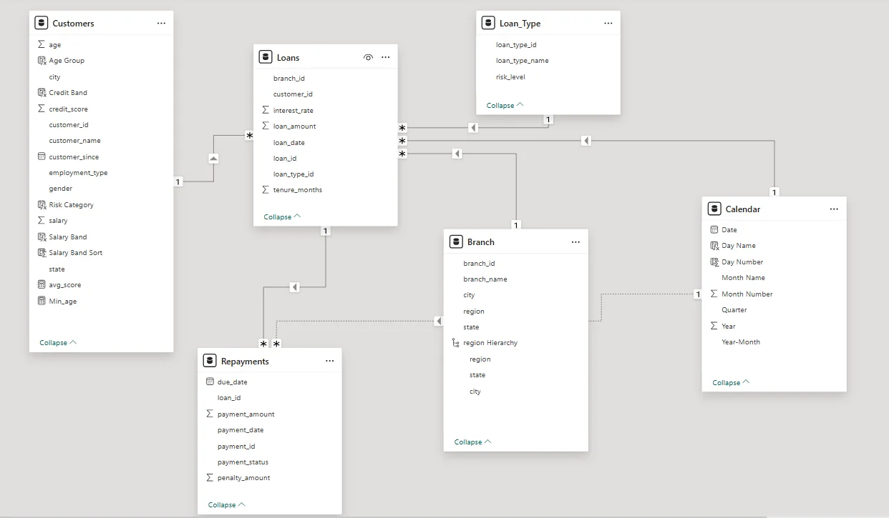
| Section | What it answers |
|---|---|
| 1 · KPI framework | Portfolio value, default rate, NPA %, delinquency, yield, collection efficiency, average credit score |
| 2 · Portfolio overview | Size of the loan book, dominant loan types, top regions |
| 3 · Growth & distribution | Monthly disbursement, branch volumes, tenure distribution, high-lending cities |
| 4 · Customer quality | Income vs loan size, credit-score spread, employment type, new vs old customer risk |
| 5 · Risk & default | Default by loan type, region, loan size and credit score |
| 6 · Profitability & efficiency | Revenue by product and region, profit vs risk, late-payment rate |
| 7 · Advanced analytics | DENSE_RANK, AVG() OVER, running totals, LAG() early-warning signal, ROW_NUMBER per region |
SELECT lt.loan_type_name,
round(AVG(r.default_flag)*100,2) || ' % ' AS default_rate
FROM repayments r
JOIN loans l ON r.loan_id = l.loan_id
JOIN loan_types lt ON l.loan_type_id = lt.loan_type_id
GROUP BY lt.loan_type_name
ORDER BY AVG(r.default_flag) DESC;SELECT
loan_id,
due_date,
delay_days,
LAG(delay_days) OVER (PARTITION BY loan_id ORDER BY due_date) AS prev_delay,
delay_days - LAG(delay_days) OVER (PARTITION BY loan_id ORDER BY due_date) AS delay_change
FROM repayments;Analytical approach
- Schema design (DDL + constraints)
- Load 5 CSVs
- SQL analysis (7 sections)
- Power BI star-schema model
- DAX measures
- 7-page dashboard
- Written insights
Key findings
Business recommendations
Reduce risk
- Could tighten BNPL approval rules or cap its share of the book
- Worth testing a minimum credit-score threshold around 650
- Should monitor collections performance in the East region specifically
Grow safely
- Home Loans look like the segment to lean into — large, low-default
- The Premium segment (734 avg score, 7.0% default) suggests room to grow without adding risk
- The LAG()-based delay signal could be monitored as an early warning before a loan defaults
Dashboard showcase
A navigable report with a home page, seven analysis pages and two drill-through detail views. Click any screenshot to enlarge.
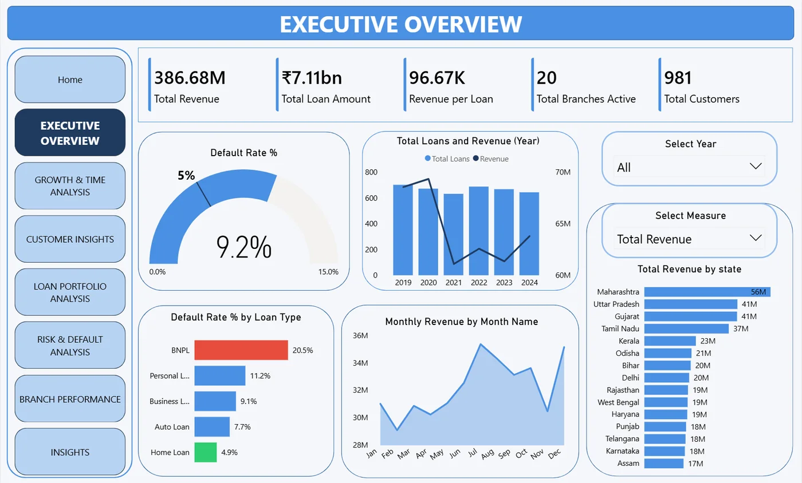
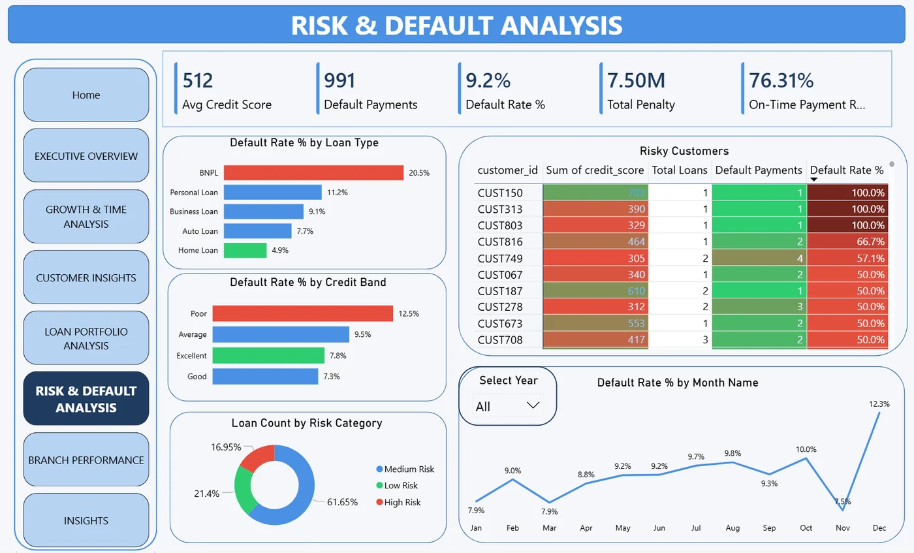
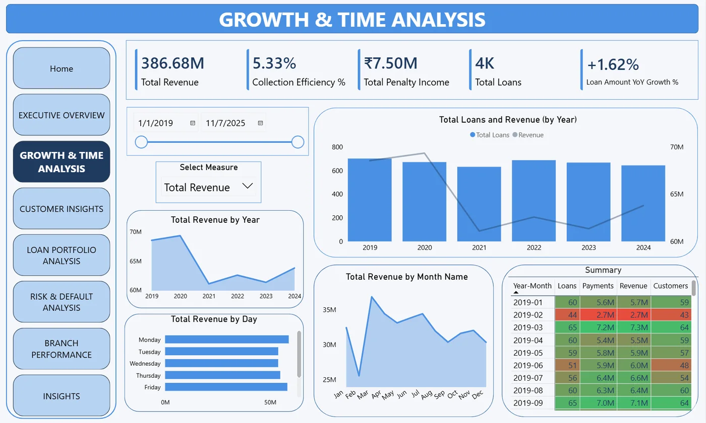
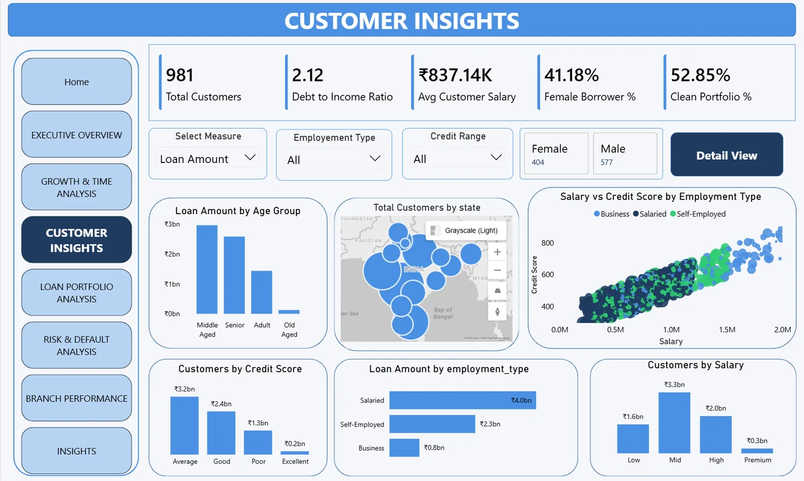
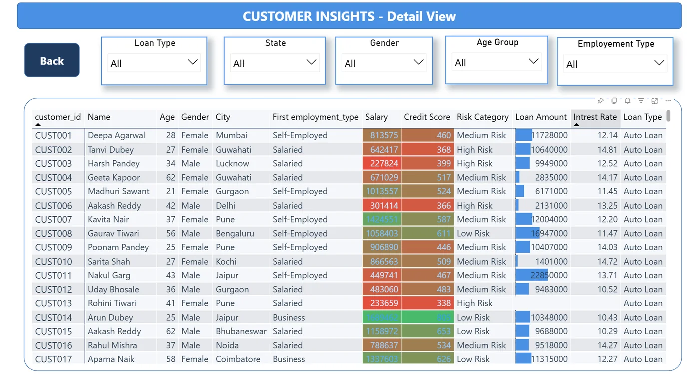
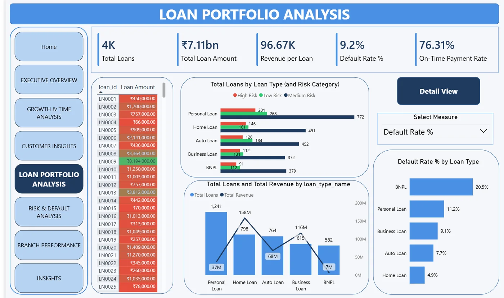
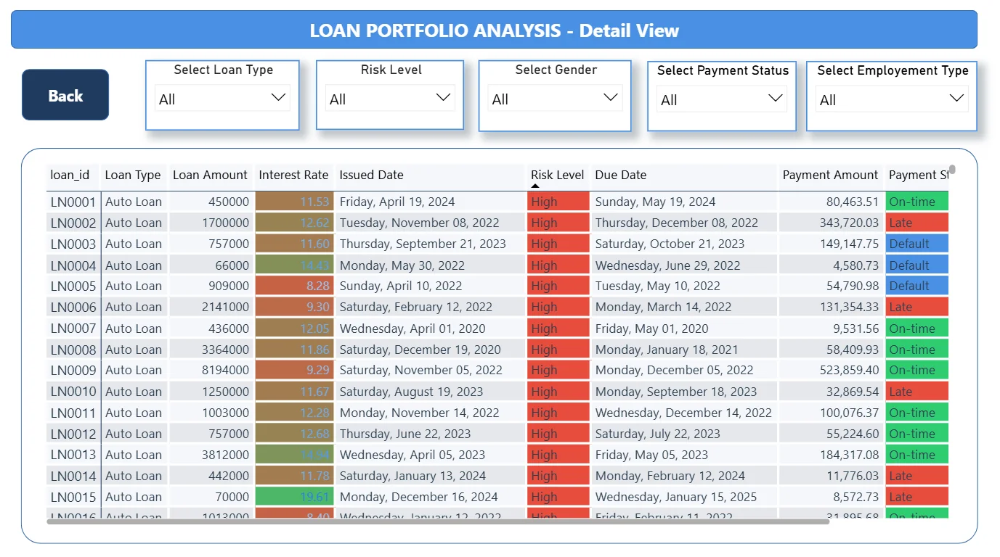
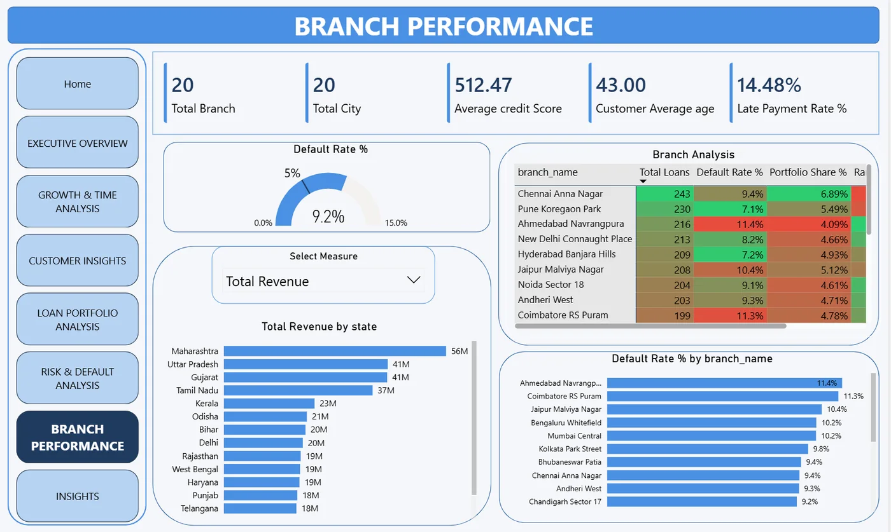
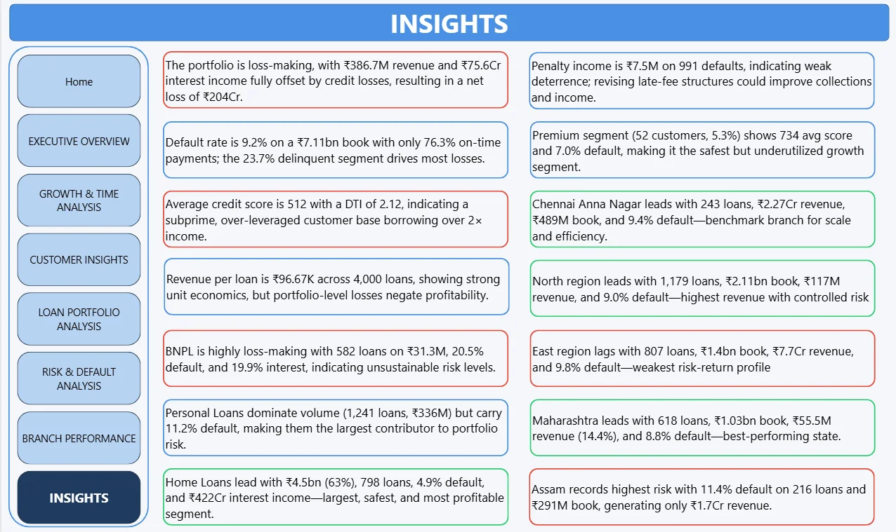
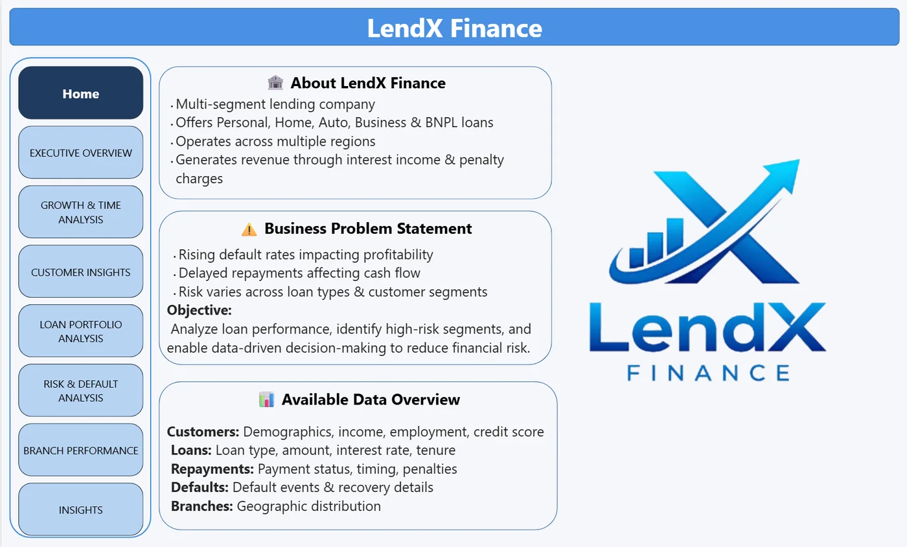
Technical implementation
| Tool | Used for |
|---|---|
| PostgreSQL | Database design, DDL and all SQL analytics |
| Power BI Desktop | Data modelling and interactive dashboards |
| DAX | Measures such as Default Rate %, Total Revenue, On-Time Payment %, Total Loan Book |
| Power Query (M) | Data transformation and cleaning |
Limitations & assumptions
Worth keeping in mind
- LendX is a fictional lender; figures demonstrate method, not real-world performance.
- No causal inference was performed — the default-rate differences by loan type and region are associations, not proven causes.
- The early-warning delay signal (LAG) is illustrative; it has not been back-tested as a predictive model.
- RFM-style segment thresholds (e.g. "Premium") are analytical choices, not an industry standard.
Explore the code
The repository contains the full PostgreSQL schema, all seven SQL analysis sections, the Power BI file and every dashboard page as an image.